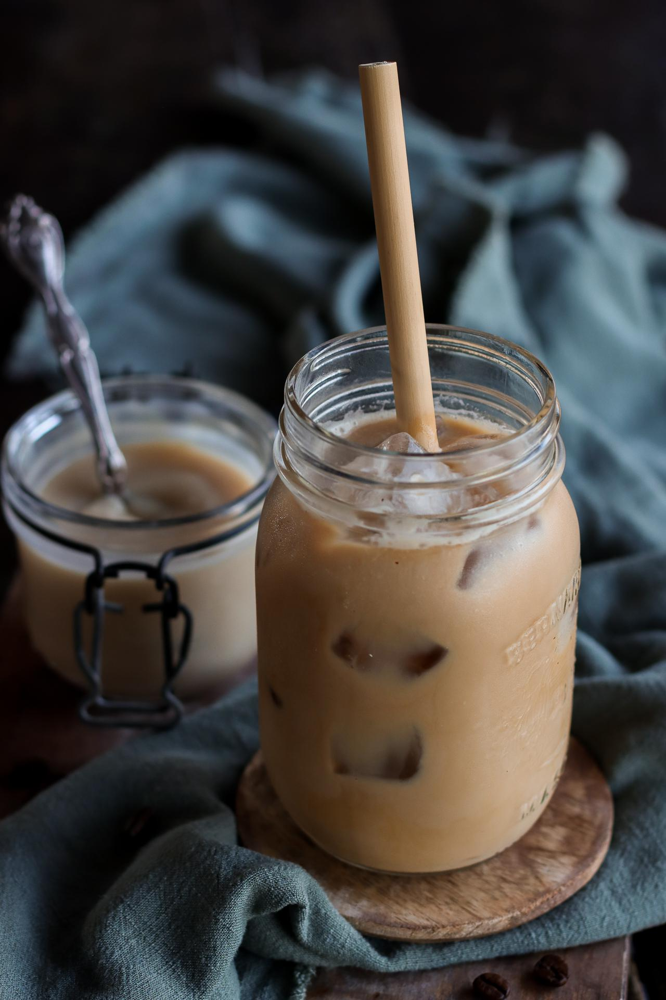

Iced Coffee

Description
Growing up, spending summers stuck at home was made more bearable by the addition of caffeine. I've naturally been addicted ever since; peaking my senior year of high school with a medium black cold brew from Dunkin' 3 times a day to fuel my extracurriculars. But now I've given in to cream and sugar, happily adding the flavors that make an addiction worth having. Its a simple way to make me happy.
Ingredients
- Store bought cold coffee, already made, black.
- Creamer/dairy/nondairy of choice
- Sweetener if desired.
Steps
- Put some ice in a cup.
- Pour the creamer and sugar in.
- Pour the coffee on top of the ingredients. Doing this last helps to stir with less effort.
- Put a straw alternative in if desired, if not, sip.